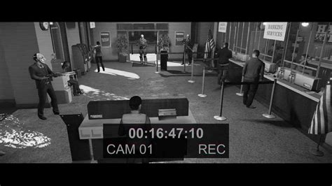
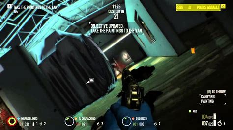

Payday 2
La Emoción del Crimen Hecho Videojuego
Adéntrate en el mundo de la delincuencia organizada con Payday 2, una experiencia que te sumerge en la adrenalina y el caos de los atracos más audaces y elaborados. Desarrollado por Overkill Software y lanzado en 2013, este juego de disparos en primera persona cooperativo te lleva a través de una serie de emocionantes golpes, desde bancos hasta casinos y más allá.
En Payday 2, asumes el papel de uno de los infames criminales del equipo PAYDAY, un grupo de expertos en robos que no temen enfrentarse a la ley en busca de la recompensa. Con un arsenal de armas personalizables, habilidades únicas y tácticas especializadas, te unirás a tus amigos en emocionantes atracos cooperativos donde la coordinación y la estrategia son clave para el éxito.
Lo que hace que Payday 2 sea tan convincente es su enfoque en la jugabilidad cooperativa. Trabajar en equipo con hasta tres amigos para planificar y ejecutar atracos es una experiencia verdaderamente inmersiva, llena de momentos de tensión y emoción cuando te encuentras al borde del fracaso o celebras la victoria.


Mucho contenido, muy rejugable
Además de su jugabilidad adictiva, Payday 2 ofrece una gran cantidad de contenido para mantener a los jugadores comprometidos a largo plazo. Con una variedad de atracos, misiones y desafíos para completar, así como actualizaciones constantes de contenido y eventos especiales, siempre hay algo nuevo que descubrir y conquistar en el mundo del crimen de Payday 2.
Con Payday 2, Overkill Software llevó las emocionantes experiencias de atracos del juego original a nuevas alturas, ofreciendo una serie de mejoras y adiciones que elevaron la franquicia a un nivel completamente nuevo. En comparación con el Payday original, Payday 2 presenta una jugabilidad más refinada y profunda, con una variedad de opciones tácticas y estratégicas que permiten a los jugadores planificar y ejecutar atracos de una manera más flexible y satisfactoria. Además, el juego ofrece una mayor cantidad y variedad de contenido, desde atracos y misiones hasta armas y equipos, brindando a los jugadores más opciones y oportunidades para personalizar su experiencia criminal. Con gráficos mejorados, una banda sonora aún más envolvente y una comunidad activa y comprometida, Payday 2 se destaca como una secuela que supera a su predecesor en todos los aspectos, ofreciendo una experiencia de juego aún más emocionante y memorable para los amantes de los atracos.
Además de su jugabilidad adictiva, Payday 2 ofrece una gran cantidad de contenido para mantener a los jugadores comprometidos a largo plazo. Con una variedad de atracos, misiones y desafíos para completar, así como actualizaciones constantes de contenido y eventos especiales, siempre hay algo nuevo que descubrir y conquistar en el mundo del crimen de Payday 2.
Síntesis:
Payday 2 es un emocionante juego de atracos que te sumerge en el mundo oscuro y
peligroso de la delincuencia organizada. Con su jugabilidad cooperativa emocionante,
toneladas de contenido y una comunidad activa de jugadores, es un título que seguramente
te mantendrá enganchado durante horas mientras te embarcas en una vida de crimen con tus amigos.
Nota Final:
8.7